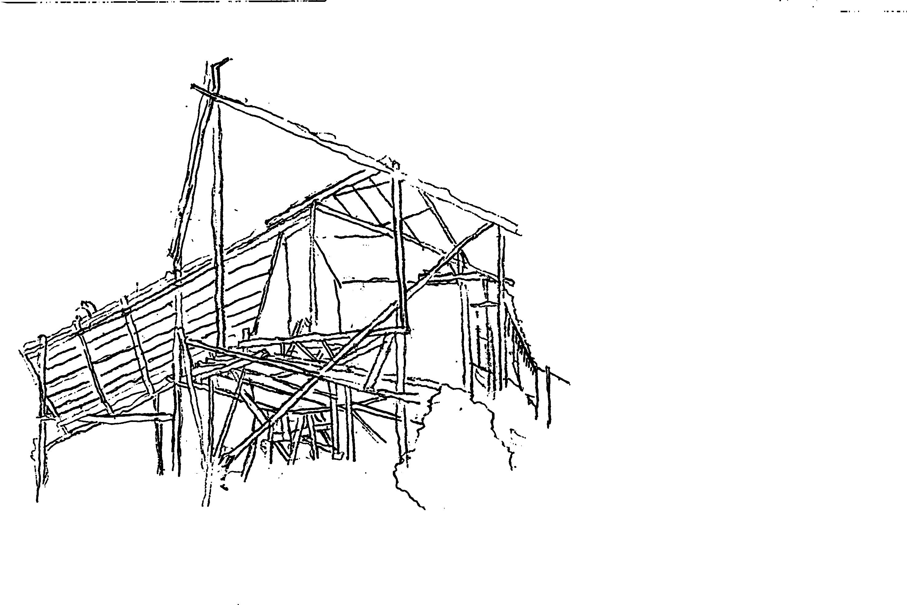
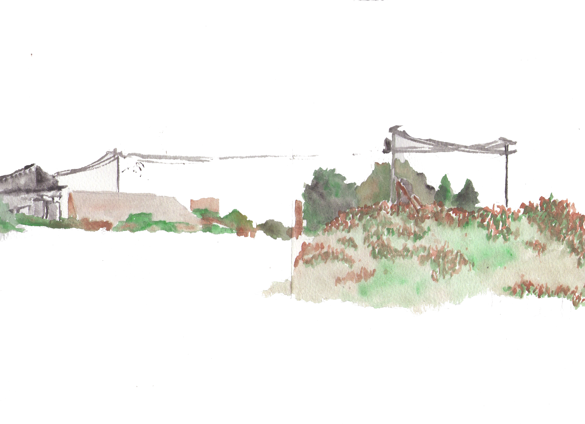
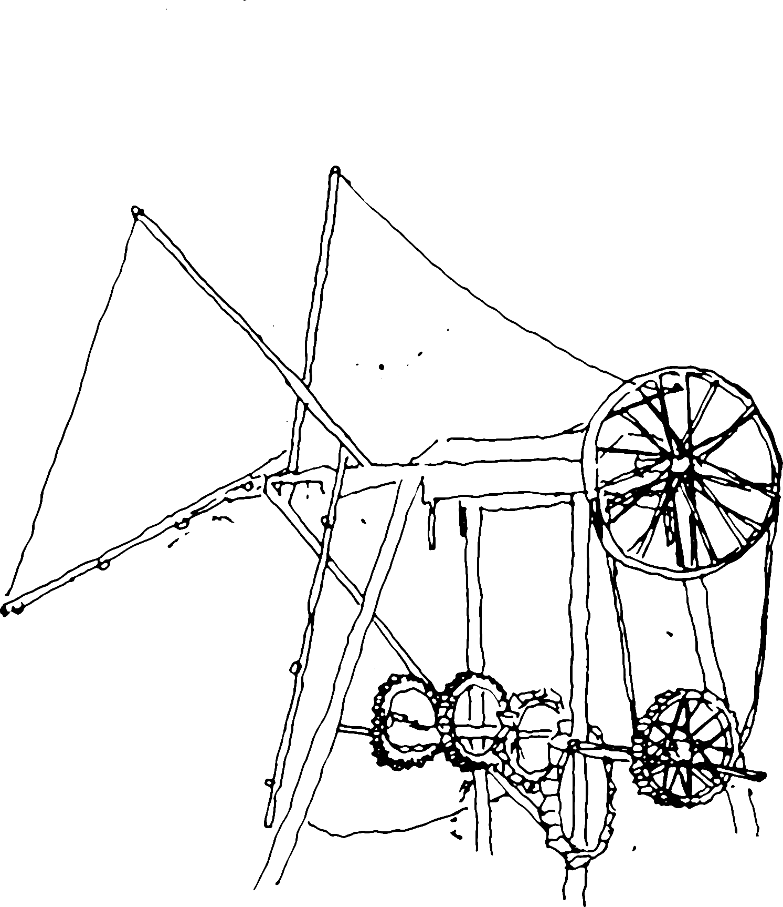

Los Mantos de Gea en los talleres de Diseño Gráfico
Dirigidos por los profesores Claudio Girola I. y Godofredo Iommi M., durante los años 1981 - 1983. Las ilustraciones de este cuadernillo tienen dos características distintas:
a. Las fotografías en blanco y negro dan cuenta en forma documental de los elementos con que se construyeron los ámbitos de las "magnitudes en fuga" o bien el ámbito mismo de estos.
b. Los dibujos fotográficos o impresos a color corresponden a una re-creación de las "magnitudes en fuga"; tanto del taller que trabajó en la observación de los "suelos" y finiquitó su etapa construyendo el "Manto de Gea", como del taller que trabajó en la observación del "fuego" y terminó su etapa construyendo "La Sala negra del Fuego".
Durante los años 1981-83 los talleres de Diseño Gráfico que estuvieron bajo nuestra tuición trabajaron de otra manera que la habitual hasta ese entonces.
Lo importante fue, por intermedio de ellos, cuestionarnos los fundamentos corrientemente aceptados por la gráfica en el mundo. Entre ellos, el más importante: LA ESENCIA DEL DECIR GRAFICO ES LO "LOGOTIPICO".
La forma de cuestionarnos tomó caracteres de proposición, nunca de dogma. Por otro lado y formando rápida tradición en el lenguaje doméstico de la Escuela, estos talleres fueron llamados genéricamente "Mantos de Gea".

Vamos a dar, por el momento, una definición de tipo axiomático: son construcciones que nacen de un fundamento que quiere constituirse como teoría gráfica y cuyo punto de partida no es "logotípico".
El carácter de axiomático da a toda definición la suficiente generalidad como para permitir volver una y otra vez a ella desde situaciones más específicas. Es de esta manera que el objetivo y objeto que nos proponemos señalar se irá mostrando. Lo concluso que todo axioma expresa, es decir, la no necesidad de explicación del principio implicado en el mismo, diseño el "todo", pero en nuestro caso ese "todo" que contiene la respuesta no pretende ni desea ser entendido como una figura de perímetros pre-determinados.
Habitualmente las "totalidades" diseñan los contornos de las figuras y posteriormente se ordenan dentro de ellas los elementos que la componen. El valor de nuestro "todo" se asemeja más al barro antes que de él surja el ladrillo. Con otras palabras, partimos amereidianamente. Desde lo puntual, como aquellos dibujantes que comienzan el retrato de alguien comenzándolo a dibujar por las fosas nasales de su modelo. Nuestra pregunta radical fue ésta: "Qué es lo que tenemos en lo obvio?" [2] ... (y en nuestro caso) en lo obvio de la gráfica constituida en el mundo? Quién haya hecho, alguna vez, la experiencia de la pregunta radical sobre y en el propio oficio sabe que se parece mucho a la acción de borrar el pizarrón de clase. La superficie del mismo queda uniformemente gris y disponible para ser llenada nuevamente.

Desde el año 1979 hasta el año 1981 trabajamos en los talleres con lo que denominábamos "animación de la letra". Buscamos primordialmente que el propio trazo caligráfico fuera puesto en relación con las observaciones escritas y sus croquis; del trazo con que se dibuja el vuelo y giro de una gaviota, o bien la ondulación de la ola en la orilla del mar y la sinuosidad de la línea que demarca la zona humedad y la zona seca de las arenas de las plazas, a este capítulo de la observación de lo natural añadía la observación y relación por medio de analogías aciertas, a veces, inciertas otras veces; de esa "animación de la propia caligrafía" con los algoritmos matemáticos, con las lecturas de Platón y la memorización de los poemas.
Esta modalidad nos condujo con gran fuerza a reinstalarnos en la generatriz de toda obra: la observación de la realidad, desde lo que podríamos llamar el "descréditos" de la misma en cuanto "naturalidad".
Junto a esta posición crítica, por llamarla de algún modo, se nos hizo patente una situación artística dicotómica. Durante varios años en los Talleres de América todo era orientado a ligar "América-Amereida" con nuestra propia modernidad. Sin embargo, lo que en un taller se preconizaba, en el otro no lo ejercíamos en plenitud. Citemos una breve nota de clase de uno de esos Talleres, para reflejar nítidamente lo que queremos señalar: "... habiendo realizado en estos últimos años los Talleres de América mostrando el desarrollo de la peripecia y el despliegue de la aventura de la Travesía de "Amereida", con la secreta esperanza que la escuela no quede dicotómica entre la luz de aquella travesía y su actualidad, pensamos ahora que lo que se debe hacer es recoger sin más ni más la invitación poética que habla de la ENEIDA como luz en "Amereida" y trabajar desde los propios oficios a "ciegas" (valga el contrasentido) en las carencias del mar interior de América y del Pacífico" [3].
Se comenzó a desarrollar en estos talleres de gráfica la observación de "las aguas", de los "suelos" y últimamente del "fuego". El esfuerzo radicaba en que la observación dibujada no tuviera nunca el carácter de copia del natural sino que se volviera en "si mismo" de lo observado para tratar de "traerlo a presencia". Esta expresión contiene "in nuce" el propósito último del giro que realizábamos en esos talleres. Más adelante nos explayaremos sobre el sentido que le hemos dado a la expresión "traer a presencia".
En ese año, 1982, los alumnos comenzaron a hacer travesías. Así es que fueron primero al Archipiélago de Juan Fernández y posteriormente al desierto del Norte de Chile en la zona indicada por Danilo Goic, como la más apropiada para poder realizar las pautas de trabajo que habíamos establecido con los alumnos. Hubo un tiempo previo a las travesías en que todo el taller recopiló y estudió toda clase de mapas de esas zonas, toda su historia, toda su literatura. Títulos como "Robinson Crusoe", "Moby Dick" y "La verdadera historia de la isla de Robinson Crusoe" de Vicuña Mackenna, junto a la "Eneida" y "Amereida" formaban la biblioteca del taller.
thumb|320 px|center|Imagen 01. Fotografías de la "magnitud en fuga" correspondiente al taller que trabajó "los suelos" y construyó el "Manto de Gea" en el año 1981.
thumb|320 px|center|Imagen 02. Dibujo a tinta de colores que corresponde a la "re-creación" de "Manto de Gea"

Todo estaba dirigido y orientado a alcanzar algunas palabras gráficas propias que le permitiera al alumno penetrar más allá de la construcción del "mundo como paisaje", es decir, desde un punto de partida de "mundo" como "nuevo cristal" [4] y no un mero desarrollo de lo natural. En clase dijimos a este respecto: "Hemos hecho un giro en diseño gráfico. Es de ahí, de ese giro, de donde vamos a sacar fuerzas para poder hacerlo. Tenemos una proposición, no un dogma, una proposición a partir del texto de "Eneida-Amereida". La proposición contiene un intento, y este es el de salirse del cuadro que hemos seguido en los años anteriores, cuya característica es que indica algo que no es "si mismo". Un afiche, por ejemplo, es una señal que indica otra cosa que no es "si mismo". Hasta la propia ordenación de un libro trata, calculadamente o improvisadamente, de "poner en escena" el contenido del texto. Nosotros intentamos hacer un cambio para lograr que el diseño gráfico "presente", es decir, que no tuviera como arquetipo el "logo", fuera de sí, sino que prevaleciera su propio valor intrínseco. Muestre lo que quiere mostrar. Este punto hay que tenerlo siempre presente. Es la regla de oro con que hay que trabajar. Veamos algo antes a propósito de la observación: uno se coloca, por ejemplo, frente a la roca o al suelo; mira y dibuja. ¿Qué observación hay en ese dibujo? ¿Qué es lo que se observa? Observar es algo más que dibujar. Ciertamente que hay que tener muy claro, es decir, muy "adelante" lo que se está viendo, pero todavía no se observa nada hasta el momento que ME PLANTEO la relación que tendrá el perímetro de esa figura con el perímetro de tal o cual elemento que la integra. ¿Qué queremos decir con esto? Queremos decir que hay que aguzar el ojo para IR MAS ALLA del buen dibujo; para que este TRAIGA la observación. Entonces el dibujo va a ser siempre "original" y se va a calar de esta manera gráficamente lo que se está mirando..."